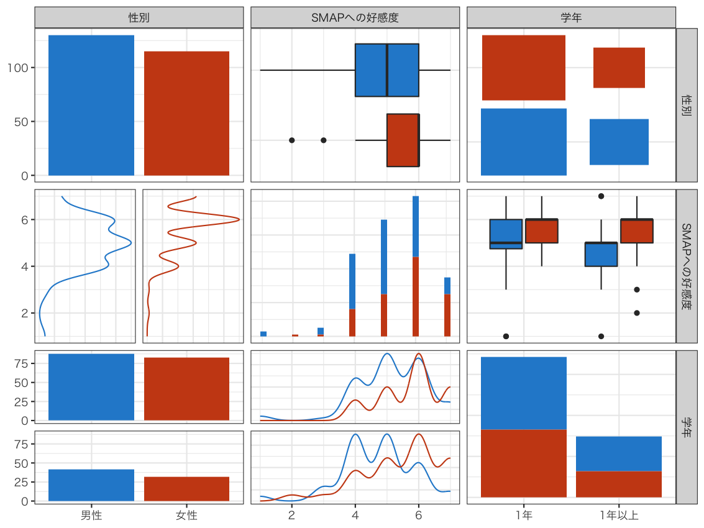

学生意識調査 2004
好きなタレント
菅野剛 研究室
1.
調査概要
表1:
学生意識調査2004 nu04cel
項目
内容
調査テーマ
好きなタレント
実施時期
2004年
対象
社会学科学生
オープンキャンパス (オンライン調査と分析の実習)
調査方法
質問紙法・自記式 / オンライン調査
標本サイズ
n=258
環境
SPSS
,
PHP
,
GD Graphics Library
その他
オンライン入力・リアルタイム分析 (
Apache
, PHP)
単純集計、クロス集計、散布図、相関係数など
2.
データ構造

図1:
学生調査2004 nu04cel
3.
under construction
under construction